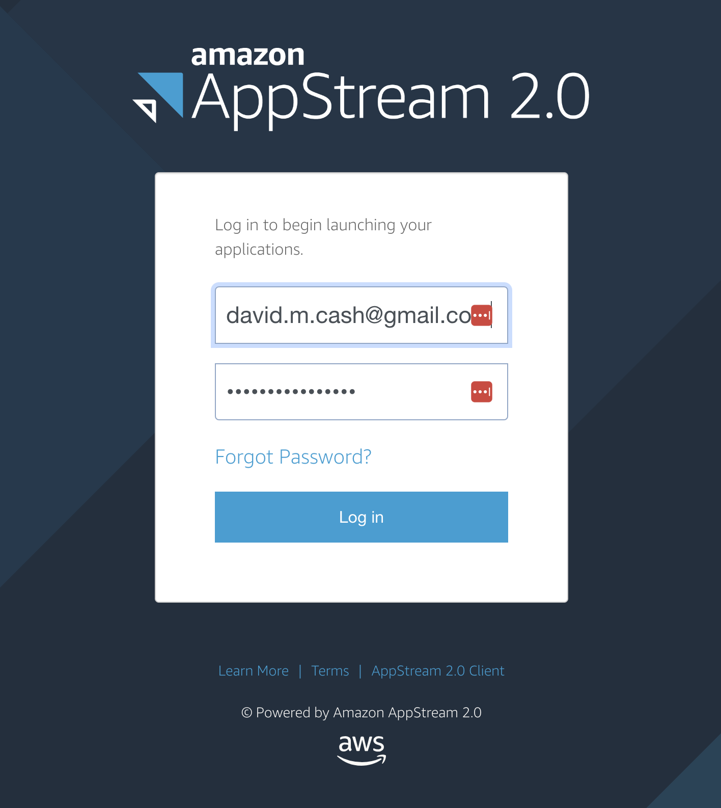
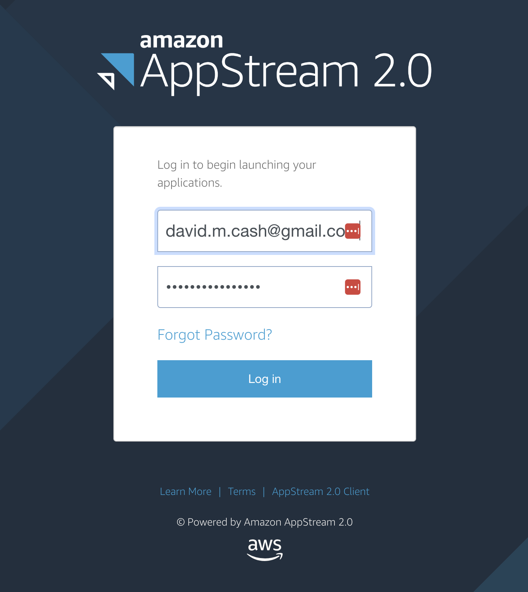

Summary and Setup
| Date | Friday 26th July 2023 |
| Time | 8AM - 12PM Eastern Daylight Time |
| Location | Marriott Philadelphia Downtown |
| Format | In-person workshop |
The workshop will provide practical information and an enhanced understanding on how to work with and analyze medical imaging data from magnetic resonance imaging (MRI) and positron imaging tomography (PET).
The initial portion of the workshop will focus on understanding the basic structure of an image, how to traverse images, data extraction, and how voxels relate to world coordinates.
Subsequent lectures will be followed by interactive sessions to demonstrate simple workflows including tissue segmentation, registration, and pre-processing steps of fMRI or DTI. The objective of the workshop is to ensure participants gain an in-depth appreciation of commonly used interpretive clinical and or research applications for each methodology.
Target Audience
This hands-on workshop can serve as a beginner or refresher course for established investigators, clinicians, and trainees involved in using imaging techniques to study Alzheimer’s disease, related disorders and normal ageing. Participants from any career stage are encouraged to join, including undergraduate students, graduate students, post-doctoral researchers and assistant professors engaged in clinical practice, research or teaching.
Requirements
Registrants must bring their own laptops to do the exercises (tablets or smartphones will not be sufficient). They will be provided with this repository and links to the “Basics of Neuroimaging” series of AAIC webinars. The links to the webinars and the slides are below.
At the workshop, we will all be using a standard environment, using a virtual machine (VM) hosted on the cloud. This ensures that everyone will be seeing the exact same screen for these lessons, regardless of if you are using a Mac or Windows operating system. You can find out more how to access this virtual machine below.
Agenda
The workshop will consist of hands-on interactive sessions. The first session will focus on understanding the basic structure of imaging data, how to traverse images, data extraction, and how voxels relate to world coordinates. We will then go through the basic processing steps involving structural MRI data, demonstrating simple workflows including tissue segmentation, and registration.
The second half will consist of two independent working sessions, where facilitators will present interactive tutorials around different forms of neuroimaging analysis (structural MRI, fMRI, DTI or PET data), and the participants will then work on the tutorials of their choice, with assistance from the facilitators. The objective of the workshop is to ensure participants gain an understanding of how to start processing and analyzing various imaging modalities used in dementia research.
| Time | Topic | Leader(s) |
|---|---|---|
| 8:00-8:10 AM | Opening Remarks | David Cash and Tobey Betthauser |
| 8:10-8:40 AM | Image data: Basic Structure and Function | David Cash and Tobey Betthauser |
| 8:40-9:10 AM | Structural MRI | David Cash |
| 9:10-9:20 AM | Break | |
| 9:20-9:50 AM | Introduction to Advanced Imaging Analysis Sections (PET, dMRI,fMRI) | Tobey Betthauser, Alexa Pichet Binette, Luigi Lorenzini |
| 9:50-10:40 AM | Independent working session 1: Diffsion MRI, functional MRI, PET | Facilitated by all organizers |
| 10:40-10:50 AM | Break | |
| 10:50-11:40 AM | Independent working session 2: Diffsion MRI, functional MRI, PET | Facilitated by all organizers |
| 11:40 AM - 12:00 PM | Wrapup, Q&A, feedback | David Cash and Tobey Betthauser |
Connecting to your virtual machine
This page will tell you how to access your personal virtual (VM) to run these lessons. The virtual machine is essentially a “computer within a computer”. For this workshop, we have created virtual machines that have all the necessary software to perform the lessons.
Cloud based instructions
If you have completed the pre-survey questionnaire, then you should
have received two emails. These may be located in your spam email: 1.
One should be from the email address no-reply@accounts.eu-west-2.amazonappstream.com with
the title Start accessing your apps using Amazon AppStream 2.0.
This will have the link to set your password and log in for the first
time. 1. A second email should come from the same email with the title
Amazon AppStream 2.0: New apps available.  1. Click on
the login link, and you should see the following page.  1. Click on
the Desktop item. It will then launch a computer and
you will be able to see the Desktop on the screen 1. You will see a status message that
it is starting your machine. After that you should see a desktop of the
computer you will be doing the lesson with.
1. Click on
the login link, and you should see the following page.  1. Click on
the Desktop item. It will then launch a computer and
you will be able to see the Desktop on the screen 1. You will see a status message that
it is starting your machine. After that you should see a desktop of the
computer you will be doing the lesson with.  1. IF
you get an error message saying “Resources not available,
please wait a few minutes, as there will be more virtual machines
spinning up to match the demand.
1. IF
you get an error message saying “Resources not available,
please wait a few minutes, as there will be more virtual machines
spinning up to match the demand.
If you did not supply an email yet, please approach an instructor and we will setup your account
Organizing Committee
The following committee members have been developing and testing the content and will be on-hand to lead the sessions and assist individuals.
| Name | Organization |
|---|---|
| David Cash | UCL Queen Square Institute of Neurology, United Kingdom |
| Luigi Lorenzini | Amsterdam UMC, Netherlands |
| Ludovica Griffanti | University of Oxford, United Kingdom |
| Tobey Betthauser | University of Wisconsin, U.S.A. |
| Alexa Pichet Binette | Lund University, Sweden |
Acknowledgements
These lessons are developed as part of the Health and Biosciences IDEAS project, which is a training initiative funded by UKRI Innovation Scholars (MR/V03863X/1)
Thanks to the generous support of the Alzheimer’s Association, the International Society to Advance Alzheimer’s Research and Treatment (ISTAART) and the ISTAART Neuroimaging Professional Interest Area in terms of travel funding for the organizers.
The data for this course comes from the Open Access Series of Imaging Studies(OASIS) dataset. Many thanks to Pamela LaMontaigne and the OASIS team as Washington University for their support with the data.
Special thanks to Christian Haselgrove (NITRC-CE), Courtney Waugh (Amazon), and Mark Watts (UCL) for their support in creating the infrastructure for this project.